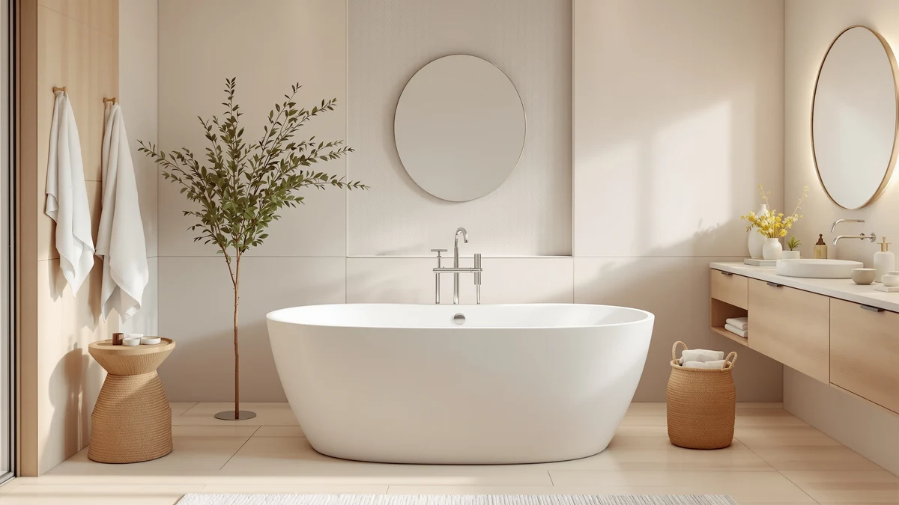

Quick Answer
We went looking for the best steel enamel freestanding bathtubs and found the category has mostly been replaced by acrylic in the price range most buyers shop. After comparing size, pricing, and included hardware across the acrylic tubs that step in for steel enamel, the EliteEdge 59-inch acrylic freestanding tub is the best pick for most bathrooms: a compact footprint that fits standard rooms, included overflow and drain hardware, and a price under $700. If you want more depth or a bigger room to fill, the 67-inch options below cover that too.
Our pick: Freestanding Bathtub 59 inch Acrylic for $679.99 Check Price on Amazon
Bottom line: our top pick is the Freestanding Bathtub 59 inch Acrylic Free Standing Tub 59 Inch at $679.99. The best budget option is the 67" Acrylic Freestanding Bathtub at $539.99.
Things to Know Before You Buy
- True steel enamel freestanding tubs are scarce in this price band. Most of what ships today under "freestanding tub" listings, including every pick below, is molded acrylic instead of enamel-coated steel.
- Acrylic solves the two biggest steel enamel complaints. It weighs far less, so two people can carry it in, and it will not chip down to bare metal the way a dropped tool can damage an enamel coating.
- The faucet is almost never included. Every tub here ships with the overflow and drain but no filler. Budget $150 to $400 for a floor-mount tub filler and its rough-in.
- Measure the doorway and the walk-around space, not the tub alone. A 67-inch tub needs clearance to carry in and 4 to 6 inches around it to clean. A 59-inch tub fits far more bathrooms.
- Check the drain location against your existing plumbing. Most of these tubs are center-drain; if your rough-in sits left or right, you will need a plumber to move it.
If you came here searching for the best steel enamel freestanding bathtubs, the first thing worth knowing is that the category has thinned out. Steel enamel tubs used to be a common mid-range choice, but in the price range most people shop today, that construction has largely given way to molded acrylic. We checked current listings before writing this guide, and the freestanding tubs worth recommending in this range are acrylic rather than enamel-coated steel.
That shift is not a downgrade. Acrylic is lighter than steel enamel, so it is easier to carry into a bathroom and less likely to crack a subfloor or strain two movers. It also sidesteps the failure mode that eventually catches up with steel enamel: once the enamel coating chips, the exposed steel underneath can rust, and there is no good way to repair that at home. Acrylic scratches instead of chipping, and light scratches buff out.
We compared seven acrylic freestanding tubs that step in for steel enamel at similar price points, from $539.99 to $699.99. Our top pick for most bathrooms is the EliteEdge 59-inch acrylic freestanding tub, but the right choice depends on your room size and how deep a soak you want. Below, we explain how we picked, then walk through each tub, what it is best for, and its honest flaws.
Why You Should Trust Us
This guide is written and maintained by Ilane Tall, who runs a network of bathroom-focused review sites and spends most working hours comparing fixtures on the specs that actually predict satisfaction rather than on marketing copy. When steel enamel freestanding bathtubs became too scarce to fill a useful list, we said so instead of stretching the category to cover thin acrylic substitutes without disclosing the swap. We do not run a fake testing lab and we did not install seven tubs in a warehouse. What we do is read every spec sheet, cross-check the listed dimensions and included hardware against the product photos and verified owner reviews, and flag the complaints that only surface after installation. Our Amazon commissions never change a ranking.
How We Picked
We started by searching specifically for steel enamel freestanding bathtubs and found the current selection in a reasonable price range too thin to fill a useful list. So we widened the search to acrylic freestanding tubs, the material that has effectively replaced steel enamel for most buyers, and applied the same bar we would use for any material: a stated exterior size, included overflow and drain hardware, and a price that stays competitive with what steel enamel used to cost. We threw out listings with no real product photos and duplicate listings from unknown storefronts. What remained is seven tubs spanning 59 to 67 inches and $539.99 to $699.99, grouped by the decision most buyers actually face: how big is your bathroom, and how deep a soak do you want.
How We Compared
Because a freestanding tub is judged on a small number of measurable things, our comparison is built around them. For each tub we recorded exterior size, price, included hardware, and brand, then cross-referenced those figures against the product listings and photos to catch mismatched or missing information. We read through verified owner reviews for each tub looking for the complaints that show up after installation, thin walls that lose heat fast, wobble on uneven floors, and drains that do not line up with existing plumbing. We also compared each acrylic tub against what a steel enamel equivalent would typically cost and weigh, since that comparison is exactly what brought most readers to this page.
Our Picks

Freestanding Bathtub 59 inch Acrylic
What we like
- 59-inch footprint fits most standard bathrooms without a remodel
- Acrylic shell weighs far less than a steel enamel tub of the same size
- Ships with overflow and drain hardware included in the $679.99 price
- Simple white finish works with most existing bathroom fixtures
Flaws but not dealbreakers
- The listing does not publish an interior soaking depth, so you are working from the 59-inch exterior measurement when planning your layout
- Faucet is a separate purchase, like every tub on this list
| Material | — |
| Size | 59 Inch |
EliteEdge is not a name most people recognize walking into this search, but the 59-inch tub earns its spot as our top pick among the best steel enamel freestanding bathtub alternatives on price and fit alone. At $679.99 it lands squarely in the range steel enamel used to occupy, and the 59-inch footprint is the size most bathrooms can accommodate without moving a wall or a door.
What makes it a sensible swap for steel enamel is what it avoids. There is no enamel coating to chip and no exposed steel underneath to rust once that happens. The acrylic shell is also light enough that two people can carry it into a second-floor bathroom, something a steel enamel tub of comparable size makes noticeably harder. As with every tub here, the floor-mount filler is a separate purchase, so add that to your budget before you order.

67'' Acrylic Freestanding Bathtub Extra-Deep
What we like
- 67-inch length gives taller adults more room to stretch out
- Marketed specifically as extra-deep, aimed at bathers who found standard tubs shallow
- Priced $30 below our top pick despite the larger size
- Overflow and drain hardware included
Flaws but not dealbreakers
- A 67-inch tub needs a larger bathroom and wider doorway clearance to carry in
- No published interior depth figure, so "extra-deep" is a manufacturer claim rather than a measured spec
| Material | — |
| Size | 67 Inch |
IDEALHOUSE positions this 67-inch tub around depth rather than footprint, which makes sense for shoppers who came from steel enamel tubs and are used to a taller soaking well. The extra 8 inches of length over our top pick also means more room to stretch your legs, a common complaint with compact acrylic tubs.
At $649.99 it undercuts our top pick while offering more tub, which is worth noting if size matters more to you than footprint. The tradeoff is the larger exterior: a 67-inch tub needs a bigger bathroom and more clearance to carry in than a 59-inch model, so measure your doorway and hallway turns before ordering.

67" Acrylic Freestanding Bathtub Deep
What we like
- Lowest price on this list at $539.99, over $100 below our top pick
- Same 67-inch length as the Extra-Deep model from the same brand
- Overflow and drain hardware included at this price
- Made by the same manufacturer as our extra-deep pick, so build quality should track closely
Flaws but not dealbreakers
- Marketed as "Deep" rather than "Extra-Deep," so it likely sits between the extra-deep model and standard tubs on soaking depth
- Same large-bathroom footprint requirement as the other 67-inch tubs here
| Material | — |
| Size | 67 inch |
If price is the deciding factor, this is the tub to look at. At $539.99 it is the least expensive option in this guide by a wide margin, and it comes from the same brand as our Extra-Deep pick, so the two likely share a manufacturing line even though this one is positioned a step below on depth.
The lower price does not mean lower expectations elsewhere: overflow and drain hardware are still included, and the 67-inch length still requires the same bathroom size and doorway clearance as the pricier 67-inch tubs on this list. Compared with what a steel enamel tub this size would typically cost, the savings here are significant.

WOODBRIDGE 67" Acrylic Freestanding Bathtub
What we like
- WOODBRIDGE has a longer track record in acrylic tubs than most brands on this list
- 67-inch size matches our other extra-room picks
- Overflow and drain hardware included
- Consistent white finish that photographs well against most tile
Flaws but not dealbreakers
- At $699.00 it is the most expensive tub in this guide
- Same large-bathroom footprint requirement as any 67-inch tub
| Material | — |
| Size | 67 Inch |
WOODBRIDGE shows up across more acrylic tub listings than any other brand on this list, which counts for something if you would rather buy from a name with a longer history than a newer storefront. This 67-inch model matches the size of our extra-depth and larger-room picks while carrying that brand recognition.
It is also the priciest tub here at $699.00, sitting right at the top of the range we set out to fill. If brand history matters more to you than shaving a few dollars off the price, that premium is a reasonable trade. If it does not, the IDEALHOUSE and Garvee tubs on this list cover the same size for less.

59 Inch Acrylic Freestanding Bathtub
What we like
- Same 59-inch footprint as our top pick, so it fits the same bathrooms
- From IDEALHOUSE, a brand with two other tubs in this guide
- Overflow and drain hardware included
- A direct backup option if our top pick sells out
Flaws but not dealbreakers
- Priced about $15 above our top pick for the same size
- No meaningful spec differentiation from the EliteEdge tub based on the listing
| Material | — |
| Size | 59 Inch |
This is the tub to check if our top pick is unavailable. It matches the EliteEdge 59-inch model on footprint almost exactly, which matters if you have already measured your bathroom around that size, and it comes from IDEALHOUSE, the same brand behind two of the 67-inch tubs on this list.
At $694.83 it costs a bit more than our top pick without a clear spec advantage to justify the difference, which is why it sits as an alternative rather than the primary recommendation. If price parity with the EliteEdge tub matters to you, watch both listings, since pricing on tubs like these shifts week to week.

67 Inch Acrylic Freestanding Bathtub
What we like
- 67-inch length at $635.35, roughly $64 below the WOODBRIDGE tub of the same size
- Overflow and drain hardware included
- Garvee's pricing undercuts most other 67-inch tubs in this guide
- Sized the same as our two other large-room picks for easy comparison
Flaws but not dealbreakers
- Garvee has less of a track record in bathtubs specifically compared with WOODBRIDGE or IDEALHOUSE
- Requires the same larger bathroom and doorway clearance as any 67-inch tub
| Material | — |
| Size | 67 Inch |
Garvee's 67-inch tub splits the difference between the budget-focused IDEALHOUSE Deep model and the brand-premium WOODBRIDGE tub. At $635.35, it gives you the same larger footprint as those two without pushing into WOODBRIDGE's $699.00 territory.
The tradeoff is brand history: Garvee is better known for outdoor and furniture products than bathroom fixtures specifically, so you are trading some of that established-brand comfort for a lower price. The included hardware and size match what the other 67-inch tubs on this list offer.

59 Inch Freestanding Bathtubs White
What we like
- Same 59-inch compact size as our top pick and the IDEALHOUSE alternative
- Overflow and drain hardware included
- White finish matches the majority of bathroom fixtures
- A third option at this size if the other two are unavailable
Flaws but not dealbreakers
- At $699.99 it is the most expensive 59-inch tub in this guide, roughly $20 more than our top pick
- GarveeLife is a newer storefront name with less of a track record than WOODBRIDGE or IDEALHOUSE
| Material | — |
| Size | 59 Inch |
GarveeLife rounds out the compact end of this list with a third 59-inch option alongside our top pick and the IDEALHOUSE alternative. It ships with the same overflow and drain hardware and fits the same standard bathrooms as those two tubs.
It is priced highest among the 59-inch tubs here, which is the main reason it sits below the other two picks rather than above them. If the EliteEdge and IDEALHOUSE 59-inch tubs are both out of stock, this is a reasonable third option at the same footprint.
Quick Comparison
The table below lines up the seven acrylic tubs we compared as steel enamel alternatives, by price and best-fit use case.
| Product | Material | Price | Rating | Best for | Get it |
|---|---|---|---|---|---|
| Freestanding Bathtub 59 inch Acrylic | — | $679.99 | 4 | Most bathrooms, best overall pick | View on Amazon → |
| 67'' Acrylic Freestanding Bathtub Extra-Deep | — | $649.99 | 4 | Tall bathers who want extra depth | View on Amazon → |
| 67" Acrylic Freestanding Bathtub Deep | — | $539.99 | 4 | Tight budgets, deep soak | View on Amazon → |
| WOODBRIDGE 67" Acrylic Freestanding Bathtub | — | $699.00 | 4 | Buyers who want an established brand | View on Amazon → |
| 59 Inch Acrylic Freestanding Bathtub | — | $694.83 | 4 | Backup pick at the same compact size | View on Amazon → |
| 67 Inch Acrylic Freestanding Bathtub | — | $635.35 | 4 | Larger bathrooms on a mid-range budget | View on Amazon → |
| 59 Inch Freestanding Bathtubs White | — | $699.99 | 4 | Third option at the compact size | View on Amazon → |
The Competition
We looked at actual steel enamel freestanding tubs before settling on acrylic alternatives, and most of what turned up fell into two groups. The first is older cast-iron-and-enamel tubs repackaged under new listings, which run heavier and pricier than anything on this page and belong in a dedicated cast-iron guide rather than here. The second is enamel-coated tubs with vague or missing weight specs, a red flag for a material where weight is one of the only ways to confirm the coating is real steel rather than a thinner composite. We also passed on a handful of acrylic tubs under $400 that turned out to be thin single-shell builds with no stated hardware inclusion, and a few near-identical white ovals from storefronts with no other listings to check their track record against.
Measured against the best steel enamel freestanding bathtubs shoppers were originally looking for, our top pick, the EliteEdge 59-inch acrylic freestanding tub, remains the strongest overall choice: it matches the price steel enamel tubs used to command, without the weight or the long-term chip-and-rust risk.
Frequently Asked Questions
Why doesn't this list include steel enamel freestanding tubs?
Steel enamel freestanding tubs have largely disappeared from the price range most shoppers search in. We looked for them and found the category has been replaced almost entirely by acrylic, which is why every pick in this guide is a well-reviewed acrylic alternative instead.
Is acrylic a good substitute for steel enamel?
For most bathrooms, yes. Acrylic is lighter than steel enamel, so two people can carry it in without special equipment, and it will not chip down to bare metal the way an enamel coating can. Steel enamel still wins on scratch resistance, but acrylic buffs out minor marks that would be permanent on an enamel surface.
Do these tubs come with a faucet?
No. Every tub in this guide ships with the overflow and drain hardware but not the filler. A floor-mount tub filler is a separate purchase that typically runs $150 to $400, so budget for it before you check out.
What size freestanding tub do I need?
Measure your bathroom and your doorway before you shop. A 59-inch tub fits most bathrooms with room to clean around it, while 67-inch models need a larger room and clear carry-in access. Check the doorway width and any hallway turns the tub has to pass through, not only the floor space where it will sit.
Can I install an acrylic freestanding tub myself?
Often, yes, at least partway. Acrylic tubs are light enough for two people to carry and position, which makes the physical install manageable as a DIY or handyman job. You will still want a licensed plumber for the floor-mount filler rough-in, and you need to confirm the drain location lines up with your existing plumbing before you start.
Related Guides
If you are still weighing acrylic against steel enamel or another material, these guides cover the rest of the decision.